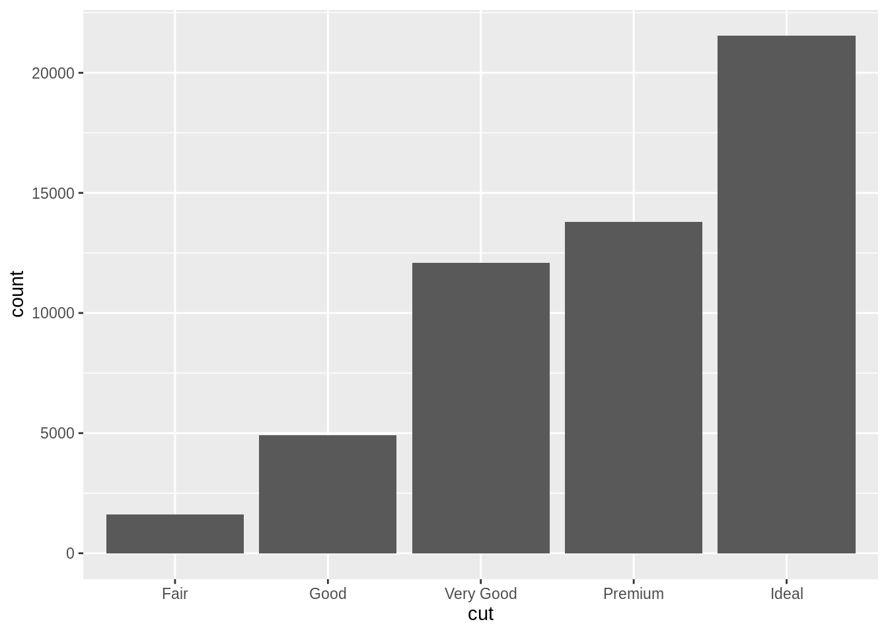
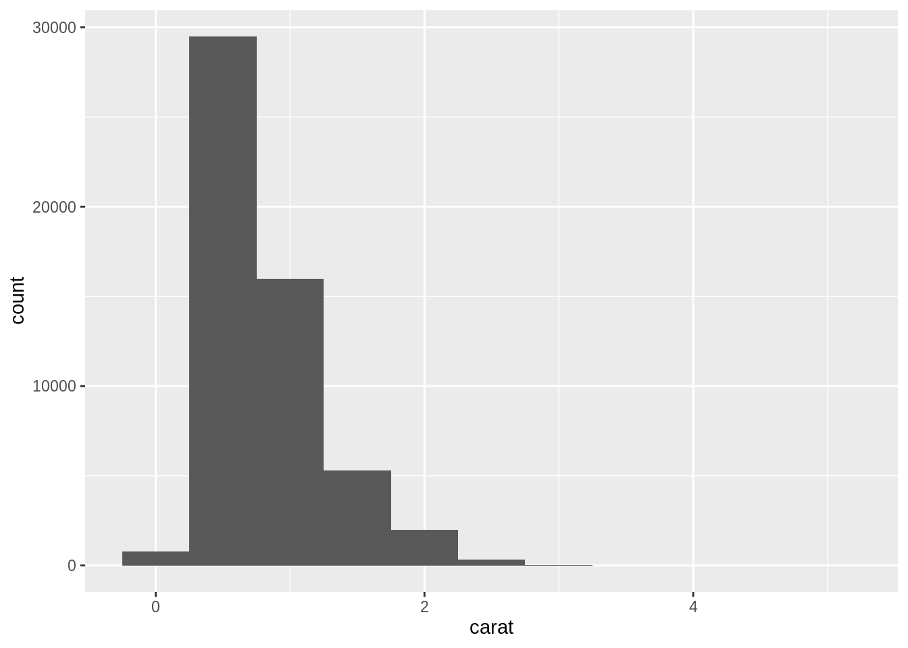
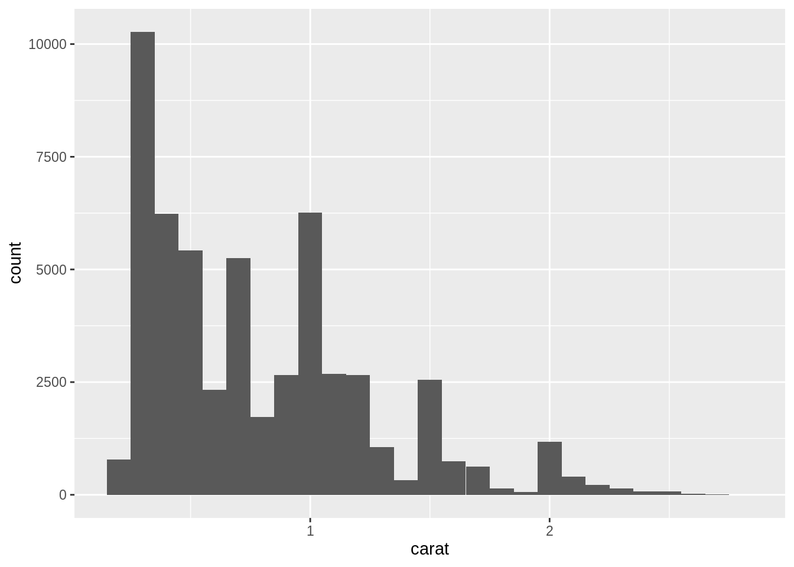
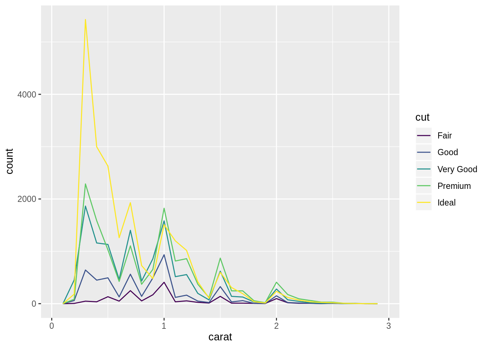
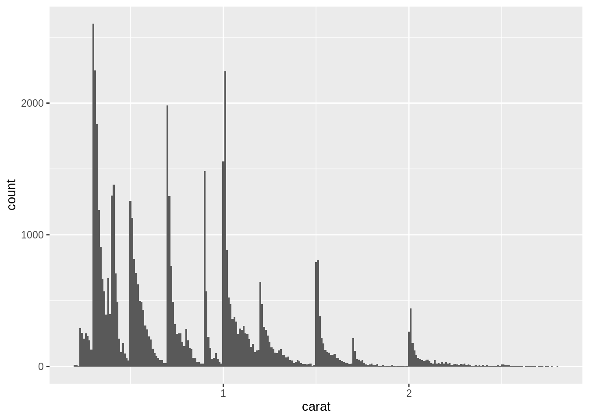
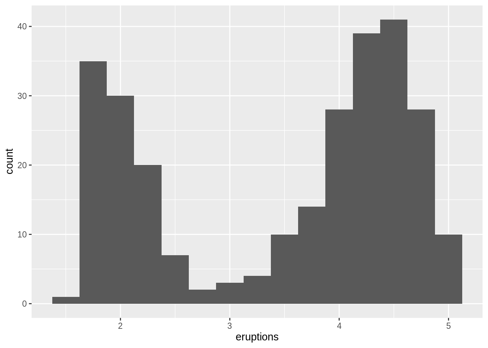
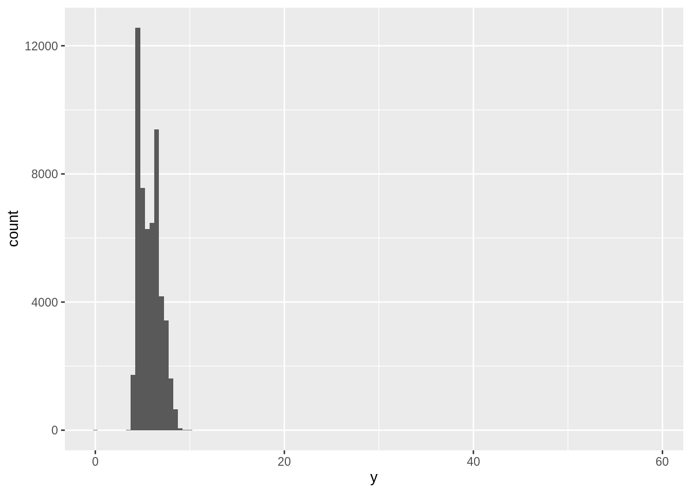
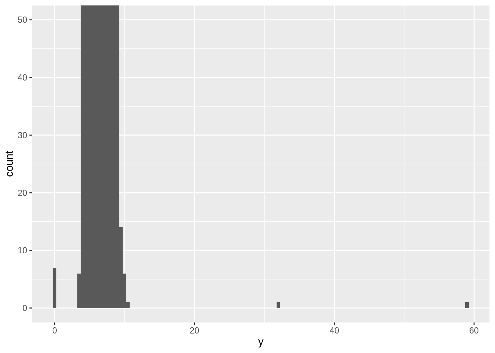
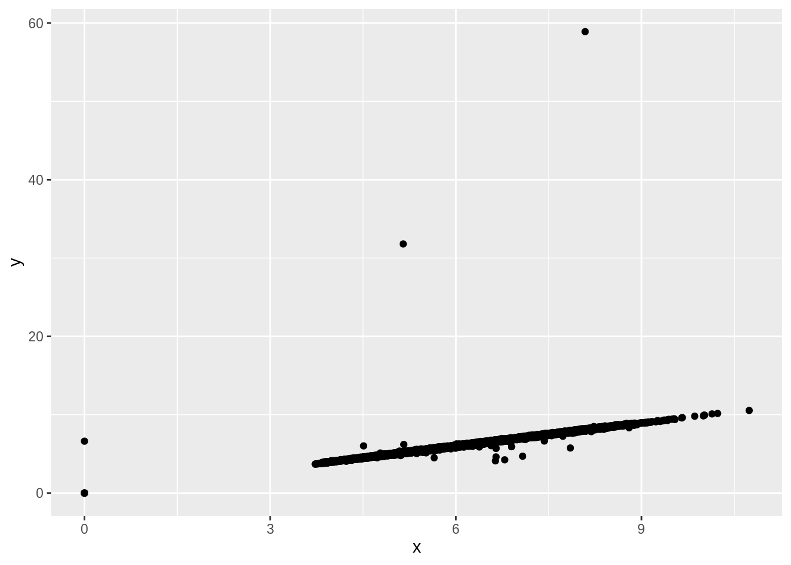

Total lesson time: 2 hours
Exploratory data analysis is the process of visualizing and transforming your data in a systematic way. It’s goals are:
Generate questions about your data.
Search for answers by visualising, transforming, and modelling your data.
Use what you learn to refine your questions and/or generate new questions.
Even in cases where data analysis may seem straightforward, exploratory data analysis is important as it allows you to investigate the quality of your data. Data that doesn’t meet expectations may need to be subjected to “data cleaning”, using all the tools of exploratory data analysis - visualisation, transformation, and modelling.
Today we’ll combine what you’ve learned about dplyr and ggplot2 to interactively ask questions and answer them with data.
Your goal during exploratory data analysis is to develop an understanding of your data. The easiest way to do this is to use questions as tools to guide your investigation. A common questions might be:
Variation is the tendency of the values of a variable to change from measurement to measurement. Every variable has its own pattern of variation, which can reveal interesting information. The best way to understand that pattern is to visualise the distribution of the variable’s values.
How you visualise the distribution of a variable will depend on whether the variable is categorical or continuous. A variable is categorical if it can only take one of a small set of values. In R, categorical variables are usually saved as factors or character vectors. To examine the distribution of a categorical variable, use a bar chart:
# Note: diamonds is a dataset that comes along with loading the ggplot2 and/or tidyverse packages
ggplot(data = diamonds, aes(x = cut)) +
geom_bar() The height of the bars displays how many observations occurred with each x value. You can compute these values manually with dplyr’s count():
## # A tibble: 5 x 2
## cut n
## <ord> <int>
## 1 Fair 1610
## 2 Good 4906
## 3 Very Good 12082
## 4 Premium 13791
## 5 Ideal 21551A variable is continuous if it can take any of an infinite set of ordered values. To examine the distribution of a continuous variable, use a histogram:
ggplot(data = diamonds, aes(x = carat)) +
geom_histogram(binwidth = 0.5) #graphing the distribution of diamonds by carat
You can compute this by hand by combining dplyr’s count() and ggplot2’s cut_width():
diamonds %>%
count(cut_width(carat, 0.5)) # cut_width is a function that makes groups of a specified bin width## # A tibble: 11 x 2
## `cut_width(carat, 0.5)` n
## <fct> <int>
## 1 [-0.25,0.25] 785
## 2 (0.25,0.75] 29498
## 3 (0.75,1.25] 15977
## 4 (1.25,1.75] 5313
## 5 (1.75,2.25] 2002
## 6 (2.25,2.75] 322
## 7 (2.75,3.25] 32
## 8 (3.25,3.75] 5
## 9 (3.75,4.25] 4
## 10 (4.25,4.75] 1
## 11 (4.75,5.25] 1A histogram divides the x-axis into equally spaced bins and then uses the height of a bar to display the number of observations that fall in each bin.
You can set the width of the intervals in a histogram with the binwidth argument, which is measured in the units of the x variable. You should always explore a variety of binwidths when working with histograms, as different binwidths can reveal different patterns. For example, here is how the graph above looks when we zoom into just the diamonds with a size of less than three carats and choose a smaller binwidth.
smaller <- diamonds %>%
filter(carat < 3) # Make a dataset with only diamonds smaller than 3 carats
ggplot(data = smaller, aes(x = carat)) +
geom_histogram(binwidth = 0.1) # Zoomed in dataset with smaller bin widths
If you wish to overlay multiple histograms in the same plot, I recommend using geom_freqpoly() instead of geom_histogram(). geom_freqpoly() performs the same calculation as geom_histogram(), but instead of displaying the counts with bars, it uses lines instead. It’s much easier to understand overlapping lines than bars.

Now that you can visualise variation, what should you look for in your plots? And what type of follow-up questions should you ask?
In both bar charts and histograms, tall bars show the common values of a variable, and shorter bars show less-common values. Places that do not have bars reveal values that were not seen in your data. To turn this information into useful questions, look for anything unexpected:
Which values are the most common? Why?
Which values are rare? Why? Does that match your expectations?
Can you see any unusual patterns? What might explain them?
As an example, the histogram below suggests several interesting questions:
As an example, the histogram below suggests an interesting question:

Clusters of similar values suggest that subgroups exist in your data. To understand the subgroups, ask:
How are the observations within each cluster similar to each other?
How are the observations in separate clusters different from each other?
How can you explain or describe the clusters?
Why might the appearance of clusters be misleading?
The histogram below shows the length (in minutes) of 272 eruptions of the Old Faithful Geyser in Yellowstone National Park. Eruption times appear to be clustered into two groups: there are short eruptions (of around 2 minutes) and long eruptions (4-5 minutes), but little in between.

Outliers are observations that are unusual; data points that don’t seem to fit the pattern. Sometimes outliers are data entry errors; other times outliers suggest important new science. When you have a lot of data, outliers are sometimes difficult to see in a histogram. For example, take the distribution of the y variable from the diamonds dataset. The only evidence of outliers is the unusually wide limits on the x-axis.

There are so many observations in the common bins that the rare bins are so short that you can’t see them. To make it easy to see the unusual values, we need to zoom to small values of the y-axis with coord_cartesian():
ggplot(diamonds, aes(x = y)) +
geom_histogram(binwidth = 0.5) +
coord_cartesian(ylim = c(0, 50)) # Zoom in so the y-axis goes from 0 to 50
coord_cartesian() also has an xlim() argument for when you need to zoom into the x-axis. ggplot2 also has xlim() and ylim() functions that work slightly differently: they change the values displayed on your graph’s axes, throwing away the data outside the limits.
This allows us to see that there are three unusual values: 0, ~30, and ~60. We pluck them out with dplyr:
unusual <- diamonds %>%
filter(y < 3 | y > 20) %>% # Select rows with the unusual values we've found
select(price, x, y, z) %>% # Select relevant columns
arrange(y) # Arrange in ascending order
unusual## # A tibble: 9 x 4
## price x y z
## <int> <dbl> <dbl> <dbl>
## 1 5139 0 0 0
## 2 6381 0 0 0
## 3 12800 0 0 0
## 4 15686 0 0 0
## 5 18034 0 0 0
## 6 2130 0 0 0
## 7 2130 0 0 0
## 8 2075 5.15 31.8 5.12
## 9 12210 8.09 58.9 8.06The y variable measures one of the three dimensions of these diamonds, in mm. We know that diamonds can’t have a width of 0mm, so these values must be incorrect. We might also suspect that measurements of 32mm and 59mm are implausible: those diamonds are over an inch long, but don’t cost hundreds of thousands of dollars!
It’s good practice to repeat your analysis with and without the unusual values. If they have minimal effect on the results, and you can’t figure out why they’re there, it’s reasonable to replace them with missing values, and move on. However, if they have a substantial effect on your results, you shouldn’t drop them without justification. You’ll need to figure out what caused them (e.g. a data entry error) and disclose that you removed them in your write-up.
If you’ve encountered unusual values in your dataset, and simply want to move on to the rest of your analysis, you have two options.
Drop the entire row with the strange values:
diamonds2 <- diamonds %>%
filter(between(y, 3, 20)) # between() selects only values between 3 and 20I don’t recommend this option because just because one measurement is invalid, doesn’t mean all the measurements are. Additionally, if you have low quality data, by time that you’ve applied this approach to every variable you might find that you don’t have any data left!
Instead, I recommend replacing the unusual values with missing values. The easiest way to do this is to use mutate() to replace the variable with a modified copy. You can use the ifelse() function to replace unusual values with NA:
ifelse() has three arguments. The first argument test should be a logical vector. The result will contain the value of the second argument, yes, when test is TRUE, and the value of the third argument, no, when it is false. Alternatively to ifelse, use dplyr’s case_when(). case_when() is particularly useful inside mutate when you want to create a new variable that relies on a complex combination of existing variables.
We just learned a bit about checking for unusual values in your dataset, but there are several ways of dealing with outliers beyond replacing them with missing values. What are our other options and under what circumstances should we use them?
Let’s try #2 (using removal) with the diamonds dataset:
diamonds2 <- diamonds
diamonds2$xZscore <- scale(diamonds2$x, center=TRUE, scale=TRUE) # Transform into z-scores
diamonds2$xZscore <- as.numeric(diamonds2$xZscore)
diamonds2 <- diamonds2 %>%
mutate(xZscore = ifelse(xZscore < -3.29 | xZscore > 3.29, NA, xZscore)) # Create new dataset with only z-score values between -3.29 and 3.29
#diamonds2 %>%
# arrange(desc(xZscore)) %>%
# View()Although as researchers we strive to collect complete sets of data, it is often the case that we have missing data. Missing data can occur for a variety of reasons. However, just because we have missed out on some data for a participant doesn’t mean that we have to ignore the data we do have (although it sometimes creates statistical difficulties). Nevertheless, we do need to tell R that a value is missing for a particular case.
Like R, ggplot2 subscribes to the philosophy that missing values should never silently go missing. It’s not obvious where you should plot missing values, so ggplot2 doesn’t include them in the plot, but it does warn that they’ve been removed:

To suppress that warning, set na.rm = TRUE:
What happens to missing values in a histogram? What happens to missing values in a bar chart? Why is there a difference?
What does na.rm = TRUE do in mean() and sum()?
The choice of method to impute missing values largely influences the model’s predictive ability. In most statistical analysis methods, listwise deletion is the default method used to deal with missing values. But, it not as good since it leads to information loss.
While some quick fixes such as mean-substitution may be fine in some cases, such simple approaches usually introduce bias into the data, for instance, applying mean substitution leaves the mean unchanged (which is desirable) but decreases variance, which may be undesirable.
Both of these techniques rely on the assumption that your data are missing at random (MAR). Multiple imputation is preferred because it has a wider range of applications.
In essence, multiple imputation uses information from other variables in your data to come up with plausible values.
MICE (Multivariate Imputation via Chained Equations) is one of the most commonly used packages by R users. The MICE package in R helps you by imputing missing values with plausible data values. These plausible values are drawn from a distribution specifically designed for each missing datapoint.
By default, linear regression is used to predict continuous missing values. Logistic regression is used for categorical missing values. Then, missing values will be replaced with predicted values.
Let’s call the MICE package now. The code below is standard and you don’t need to change anything besides the dataset name. By default, MICE uses predictive mean matching as its imputation method. You may look at the MICE documentation if you want to explore using different imputation methods or change the default parameters.
## Warning: Number of logged events: 6To impute the missing values, MICE package uses an algorithm in a such a way that information from all the other variables in the dataset is used to predict and impute the missing values. Therefore, you may not want to use a certain variable as a predictor. For example, the ID variable does not have any predictive value, so we want to remove it.
The code below will remove a variable as a predictor in imputing missing values, but will not stop MICE from imputing values for that variable itself.
By default mice() includes all the variables in the data; it is suggested that we use as many variables as possible. Do not exclude a variable as predictor from the imputation model if that variable is going be included in your final analysis model.
If you want to skip a variable from imputation itself use the code below. This variable will still be used for prediction. Let’s exclude all the variables where we aren’t missing data or where imputation isn’t of interest:
Now let specify the methods for imputing the missing values. There are specific methods for continuous, binary and ordinal variables. We will now set different methods for each variable. You can add more than one variable in each method. The default for continuous data is pmm. pmm stands for predictive mean matching, the default method of mice() for imputation of continous incomplete variables; for each missing value, pmm finds a set of observed values with the closest predicted mean as the missing one and imputes the missing values by a random draw from that set. Therefore, pmm is restricted to the observed values, and might do fine even for categorical data (though not recommended).
mice() automatically decides on the imputation model for each incomplete variable which method will be used for your data as default. The way to check how mice() actually decided to impute values is as follows:
## record_id month day year
## "" "" "" ""
## plot_id species_id sex hindfoot_length
## "" "" "" "pmm"
## weight genus species taxa
## "pmm" "" "" ""
## plot_type
## ""The variables hindfoot_length and weight are already set to pmm, so we will leave it like that. However, if we wanted to directly specify the method, we could use the following code:
Now it is time to run the multiple (m=5; this is generally standard) imputation.
##
## iter imp variable
## 1 1 hindfoot_length weight
## 1 2 hindfoot_length weight
## 1 3 hindfoot_length weight
## 1 4 hindfoot_length weight
## 1 5 hindfoot_length weight
## 2 1 hindfoot_length weight
## 2 2 hindfoot_length weight
## 2 3 hindfoot_length weight
## 2 4 hindfoot_length weight
## 2 5 hindfoot_length weight
## 3 1 hindfoot_length weight
## 3 2 hindfoot_length weight
## 3 3 hindfoot_length weight
## 3 4 hindfoot_length weight
## 3 5 hindfoot_length weight
## 4 1 hindfoot_length weight
## 4 2 hindfoot_length weight
## 4 3 hindfoot_length weight
## 4 4 hindfoot_length weight
## 4 5 hindfoot_length weight
## 5 1 hindfoot_length weight
## 5 2 hindfoot_length weight
## 5 3 hindfoot_length weight
## 5 4 hindfoot_length weight
## 5 5 hindfoot_length weightReminder: m – Refers to 5 imputed data sets maxit – Refers to no. of iterations taken to impute missing values method – Refers to method used in imputation. We used predictive mean matching.
Then, using these 5 imputed datasets, mice creates a dataset after imputation with the following code:
Now let’s double check for missing values:
imputed %>%
select(hindfoot_length, weight) %>%
map(~sum(is.na(.))) #taken from tidyverse library purr; note requirement to include . in the function## $hindfoot_length
## [1] 0
##
## $weight
## [1] 0OK, we’ve successfully imputed values for hindfoot_length and weight using multiple imputation! How can we check the accuracy of our imputation? One way is to compare our imputed means to our actual means (i.e. with missing data included). If the variables are meaningfully correlated to one another, the averages of the imputed variables should be close to the averages of our original variables.
## [1] 29.28793## [1] 29.5754## [1] 42.67243## [1] 42.89691Let’s add some NA’s to the iris (native to R) dataset (copy the code below). Then use the MICE package to run multiple imputation on our new dataset.
This work is licensed under a Creative Commons Attribution 4.0 International License. See the licensing page for more details about copyright information.